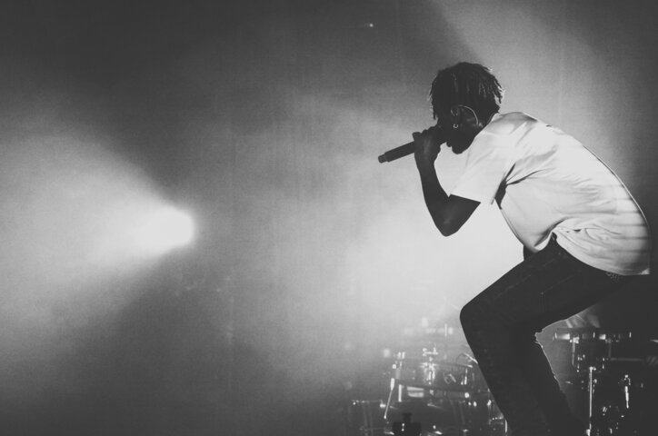

About Rap

Rap, often used interchangeably with hip-hop, is a music genre characterized by a focus on rhythm, poetry, and wordplay. Unlike traditional music forms, where melodies and harmonies take center stage, rap focuses on lyrical dexterity and intricate rhythmic speech patterns. It serves as a medium for storytelling, social commentary, and personal expression.
Although the terms "hip-hop" and "rap" are often used together, they actually refer to distinct elements within a broader cultural movement. Hip-hop encompasses not only rap music but also various other artistic components, including DJing, breakdancing, and graffiti art. It materialized as a response to the social and economic challenges African-American and Latinx communities faced in New York City during the 1970s.
Rap is considered a natural progression of African-American storytelling and talking blues (a style of country and folk music that’s marked by rhythmic speech or near-speech in which the melody is free but the rhythm is strict). The Black Arts Movement founder Amiri Baraka compares Lightnin' Hopkins (a prominent country blues singer) to Tupac, calling current rap a continuation of blues. Rap is rooted in black literature and music, with blues rhythms and speech-like patterns.
Source: mdlbeast.com
Origins
The start of the mainstream popularization of rap music can be traced back to the streets of the Bronx (and DJ Kool Herc), where block parties and neighborhood gatherings became the breeding grounds for this genre. Early rap was characterized by simple beats and party-oriented lyrics.
The “Golden Age” of rap is widely regarded as having started in the mid-1980s. Prominent figures at the forefront of popularizing this genre include LL Cool J, Run-D.M.C., Eric B. & Rakim, Queen Latifah, and A Tribe Called Quest (to name a few).
At this point, more artists began emerging and using their music to shed light on social issues, economic disparities, and racial injustices. Lyrical pioneers like Public Enemy and N.W.A. used provocative lyrics that ignited discussions about race, power, and inequality.
Modern-day rap has evolved to include various sub-genres catering to different tastes and experiences. From the introspective and emotionally charged lyrics of "conscious rap" to the energetic and braggadocious nature of "trap music." Artists like Kendrick Lamar delve deep into societal issues with thought-provoking lyricism, while others, like Future, utilize autotuned melodies to create catchy hooks.
Source: mdlbeast.com
Styles
Old School
Old School is the beginning of Hip-Hop. It starts in the seventies with DJ Kool Herc using two record players to keep the beat going while mixing in other records. DJ Kool Herc and other DJs in the South Bronx started a revolution of rapping, DJ’ing, breakdancing, and street art. All other types of rap music would grow from the roots of Old School. Old School hip-hop would use the music from funk and R&B to lay the foundation for MCs to rap over. We recommend listening to DJ Kool Herc, Sugar Hill Gang, Grandmaster Flash & The Furious Five.
East Coast Rap
In the ’90s, rap genres formed around geographical location and lyrical style. The hip-hop community now had a variety of styles to choose from. One of the most popular styles is East Coast Rap. East Coast Rap focused on drum machine-generated beats, tight samples, and some of the greatest lyricists of all time. The samples in East Coast Hip-Hop ranged from Jazz and Funk to kung-fu dialogue (we looking at you Wu-Tang). The lyrics reflected the gritty reality of living in dense urban cities and the people’s struggles that populate these spaces. You can feel the weight of busy city life in the music of this Hip-Hop genre. Some of the genre’s most significant artists include Fugees, Wu-Tang, Jay Z, The Notorious BIG, Mos Def, and Puff Daddy.
G-Funk (West Coast Rap)
West Coast rap brought the funk beat back with samples from 70’s Funk Gods like James Brown, Parliament Funkadelic, Earth Wind and Fire, and Bootsy Collins. The beats were layered with catchy hooks and swift lyricism. The feeling of the music is laid back and perfect for cruising. G-Funk created the anthems that would come to define an era of one of Hip-Hops most beloved genres. G-Funk was more than music. It feels like a state of mind that we can all enjoy.
Dirty South
While the East Coast and the West Coast had their own styles, the South was also brewing up a new sound of southern hip hop. The Dirty South is a Hip-Hop genre that mixes catchy beats with solid melodies, immaculate lyrics, and an overall dance rhythm that had people bouncing their heads and dancing at the club. The sound originated in Atlanta, New Orleans, Texas, and Florida. The Dirty South sound also incorporates elements of gospel music that shine through in melodies.
Crunk
Crunk is an evolution of the Dirty South sound. It combines fast hi-hat heavy samples with thick boomy bass kicks. There’s nothing like when a good Crunk song gets played at the club. The Crunk hip-hop subgenre is made to make your body shake, your head bob, and have you feeling like a boss at the club. The lyrics often focus on late 90’s and early 2000’s club culture and combine sexual innuendos with wilding out the club.
Gangsta Rap
Gangsta Rap lyrics deal with the harsh realities of life in underserved communities and highlight the will to survive in volatile environments. Despite the gritty reality of life on the streets, Gangsta Rap combined Jazz, funk, and orchestral samples with heavy drumbeats, making Gansta Rap’s beats as infectious as the lyrics. Gangsta Rap bloomed in the late ’80s and continued into the 2000s. The Gangsta Rap genre created such controversy in the mainstream that they held court hearings about the music, resulting in the now-famous “parental advisory warning.”
Source: wavmonopoly.com
Key Artists
Jay-Z
The first rapper inducted into the Songwriters Hall of Fame, Jay-Z believes everyone has genius-level talent. Lucky for us, Jay found his early in life, and has since become your favorite rapper’s favorite rapper. Maybe there are other rappers who could claim to match Jay at his peak. But there are simply none who can match his entire career — his longevity, the breadth of his accomplishments, and what he’s meant to hip-hop from a musical, cultural and financial standpoint for the last three decades.

Kendrick Lamar
The Compton native has become one of music’s most influential artists thanks to his vivid, thought-provoking — and sometimes controversial — lyrics, fearless genre experimentation, and agile-yet-masterful flow. Lamar first gained local attention as teen rapper K.Dot through various mixtapes before releasing his first studio album on indie label Top Dawg Entertainment, 2011’s Section.80. After signing with Dr. Dre’s Interscope imprint Aftermath Entertainment a year later, Lamar hit the ground running with second studio album good kid, m.A.A.d City — becoming an instant creative and cultural force. Signaling a major renaissance in West Coast and gangsta rap, his critically acclaimed sophomore project reeled off several commercial hits.
Eminem
After coming up in freestyle rap battles, Eminem has continually wielded the mic as his weapon of choice and obliterated anyone who comes in his path – as seen in the countless feuds he’s engaged in over the years. With unapologetically controversial and macabre (yet frequently hilarious) bars and unparalleled rhyme schemes and syncopation, he’s relished playing the role of rap’s supervillain. Em also certifiably spits a mile a minute, breaking Guinness World Records like fastest rap in a hit single with “Godzilla,” where he rapped 225 words in a 30-second segment.
Lil Wayne
“Bring the crowd and I’m loud in living color/ It is Weezy F–kin’ Baby, got these rappers in my stomach,” Lil Wayne opens his 2005 deep cut, “Best Rapper Alive,” foreshadowing the years to come. Wielding words like swords, Wayne is one of the most masterful lyricists of our time, delivering mind-boggling verses for the last quarter century. The former honors student dropped out of school at 14 to focus on his music career, five years after entering the mentorship of Cash Money Records co-founder Birdman. Around that time, Wayne joined The Hot Boys with fellow rappers Juvenile, B.G., and Turk and they topped Billboard’s Top R&B/Hip-Hop Albums chart in 1999 with Guerilla Warfare. It would be the first of twelve chart-topping albums for Wayne, including his iconic Tha Carter series, boasting a plethora of platinum plaques in the process.
Source: billboard.com